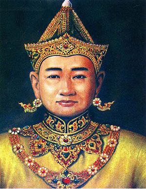
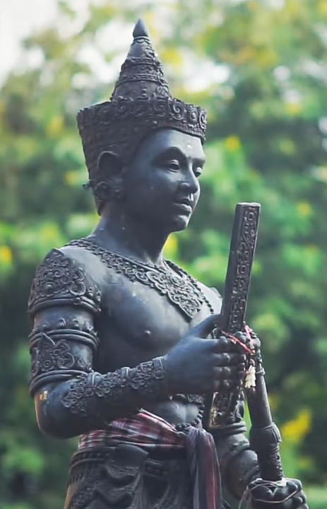

ผู้ก่อตั้งอาณาจักรล้านนา ทรงสร้างเมืองเชียงใหม่เป็นราชธานี และวางรากฐานการปกครองที่มั่นคง
ประวัติ
พญามังราย (หรือที่รู้จักในชื่อ พ่อขุนเม็งราย) เป็นปฐมกษัตริย์แห่งอาณาจักรล้านนา ทรงเป็นผู้สถาปนาและรวบรวมบ้านเมืองจนเป็นปึกแผ่นในราวพุทธศตวรรษที่ 19 โดยสร้างเมืองสำคัญ เช่น เชียงราย (พ.ศ. 1805) เวียงกุมกาม และเชียงใหม่ (พ.ศ. 1834) และขยายอิทธิพลครอบคลุมดินแดนภาคเหนือ ทรงเป็นกษัตริย์ที่ทรงพระปรีชาสามารถด้านการปกครอง ศิลปกรรม และการค้า จนอาณาจักรล้านนาเจริญรุ่งเรืองอย่างมาก
ทรงส่งเสริมพระพุทธศาสนาอย่างมาก มีการอัญเชิญพระสงฆ์จากลังกา ทำให้ล้านนาเป็นศูนย์กลางศาสนา
ประวัติ
พญากือนา หรือ พญาธรรมิกราช กษัตริย์ลำดับที่ 6 แห่งราชวงศ์มังราย (ครองราชย์ พ.ศ. 1898-1928) ทรงเป็นกษัตริย์ล้านนาผู้ทรงปรีชาสามารถและมีศรัทธาแรงกล้าในพุทธศาสนา โดยได้อาราธนา พระสุมนเถร จากสุโขทัยมาเผยแผ่ศาสนาแบบลังกาวงศ์ และอัญเชิญพระบรมสารีริกธาตุประดิษฐาน ณ วัดสวนดอกและดอยสุเทพ ยุคนี้ถือเป็นยุคทองที่รุ่งเรืองที่สุดแห่งหนึ่งของล้านนา
เป็นยุคที่อาณาจักรล้านนาเจริญรุ่งเรืองสูงสุด ทั้งด้านการเมือง การทหาร และศาสนา
ประวัติ
พระเจ้าติโลกราช (ครองราชย์ พ.ศ. 1985–2030) เป็นกษัตริย์องค์ที่ 9 แห่งราชวงศ์มังราย ผู้สร้างความเจริญรุ่งเรืองสูงสุดให้แก่อาณาจักรล้านนา ทั้งด้านการขยายอาณาเขต ขยายอำนาจลงมาถึงดินแดนสุโขทัยและทำสงครามกับอยุธยา ในรัชสมัยของพระองค์ได้มีการทำสังคายนาพระไตรปิฎกครั้งที่ 8 ของโลกที่วัดเจ็ดยอด เชียงใหม่ และส่งเสริมพุทธศาสนาอย่างยิ่งใหญ่